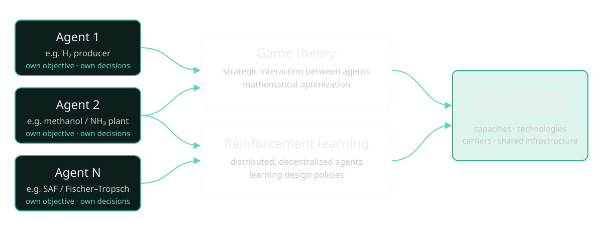

This page is a condensed, print-friendly version of my portfolio (use your browser's Print → Save as PDF). For the full version, visit YOUR-GITHUB-USERNAME.github.io.
Education
Carnegie Mellon University
Ph.D. in Chemical Engineering · GPA 4.0 · Advisor: Prof. Ana I. Torres
Pittsburgh, USA | 2024 – Present
University of Chile
M.Sc. in Chemical Engineering · GPA 4.0 · Valedictorian · Best Chemical Engineering Master's Thesis of the year
Santiago, Chile | 2022 – 2023
University of Chile
Bachelor's and Professional Degree in Chemical Engineering · GPA 4.0 · Valedictorian
Santiago, Chile | 2017 – 2023
Skills
Software:
Aspen Plus, GAMS, Python / Pyomo, Julia / JuMP, MATLAB, Excel
Chemical Engineering:
Process simulation and optimization; reinforcement learning for process design applications
Teamwork:
Active listening, cross-functional collaboration, multi-disciplinary coordination and technical leadership
Languages:
Spanish (native), English (fluent)
Technical Focus Areas

Work Experience
University of Chile Energy Center — Associated Researcher
Jan 2023 – Dec 2023 | Santiago, Chile
"Hydrogen Strategies for Chile" (Energy Ministry of Chile) and "Green Hydrogen – Impacts and Responsibilities in Land Use".
- Led the team that designed an evaluation and investment framework for large-scale hydrogen production in Chile.
- Led the design of Energy Ministry guidelines to incentivize investment in nationwide hydrogen systems.
- Created a decision-making framework aligning the instruments and legal mandates of government departments for hydrogen deployment.
- Directed a mathematical model ranking land suitability for hydrogen production across Chile, and led research on technical, environmental and socioeconomic impact criteria.
Celulosa Arauco y Constitución — Process Engineering Intern
Jan 2022 – Mar 2022 | Licantén, Chile
- Developed a predictive model for calcium oxide feed control from upstream concentration, temperature and flow measurements.
- Designed real-time process flowsheets for monitoring the lime kiln, caustification and water treatment.
Vegusta S.p.A. — External Process Consultant
Jun 2020 – Jun 2021 | Santiago, Chile
- Developed batch-scheduling optimization software for weekly production, reducing storage use under demand.
- Formulated an optimization problem for refrigeration control, minimizing power consumption under time constraints.
M.O. Consultancy — Part-time Consultant
Dec 2019 – Feb 2020 | Santiago, Chile
- Developed a patient-testing scheduling model that minimizes idle time in a public-health hospital.
Publications & Presentations
Journal Articles
- A. I. Cárdenas, F. A. Díaz-Alvarado, A. I. Torres, "Green Hydrogen Production: Process Design and Capacity Expansion Integrating Economic and Operational Autonomy Objectives," Industrial & Engineering Chemistry Research 63(1) (2024) 358–370. doi:10.1021/acs.iecr.3c03060
- A. I. Cárdenas, F. Díaz-Alvarado, et al., "Spatial Suitability for Green Hydrogen and Derivatives: A GIS-AHP Framework with Export-Certification Sensitivity Applied to Chile," International Journal of Hydrogen Energy.
Manuscripts in Preparation
- A. I. Cárdenas, A. I. Torres, "Multi-Agent Chemical Process Design: Game Theory and Reinforcement Learning."
- A. I. Cárdenas, V. Soria-Alcaide, A. I. Torres, "Strategic Design of CO₂-Reuse Pathways for Sustainable Aviation Fuel: A Game-Theoretic Techno-Economic Analysis."
- A. I. Cárdenas, F. Díaz-Alvarado, A. I. Torres, "Multi-Agent H₂–MeOH–NH₃ Industrial Park Design: Economic and Autonomy Optimization with Simultaneous Carrier Selection."
Conference Talks
- Computer-Aided Process Engineering Forum (CAPE), 2026. Speaker on distributed reinforcement learning for the decentralized design of chemical production networks.
- ESCAPE36, 2026. Speaker on game-theoretical and mathematical optimization frameworks for multi-agent design of syngas and sustainable aviation fuel production (gasification, reforming, Fischer–Tropsch).
- Green Hydrogen in Academia, 2023. Member of the winning Chilean team, proposing process systems engineering for shared infrastructure planning.
Leadership & Activities
Tartan Salsa — President of the CMU salsa dance club student association (2026)
Classical music composition — Student of Andrés Maupoint and Sebastián Molina (2017 – 2022)
Beauchef Student Orchestra — Founder and board member (2017 – 2019)
Contact
aicarden@andrew.cmu.edu
Pittsburgh, PA, USA